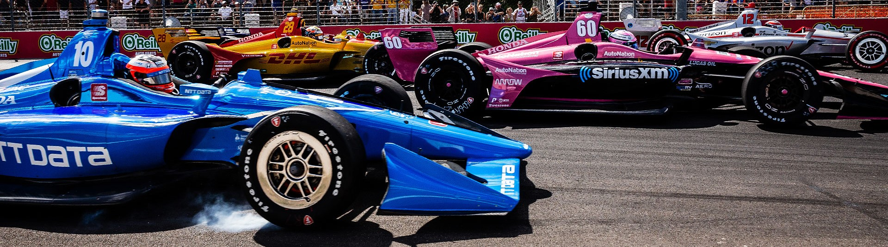
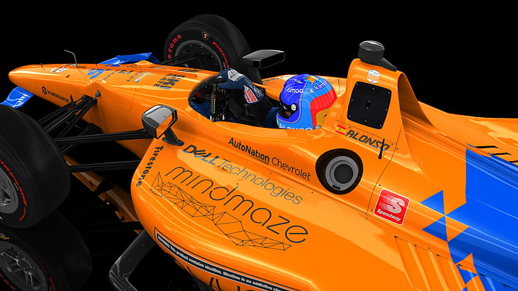
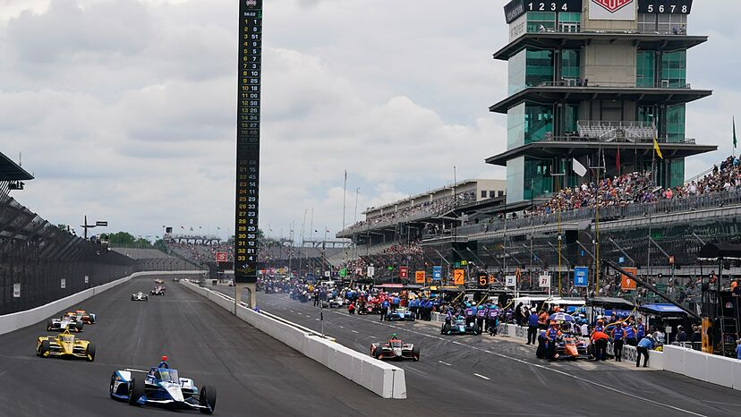
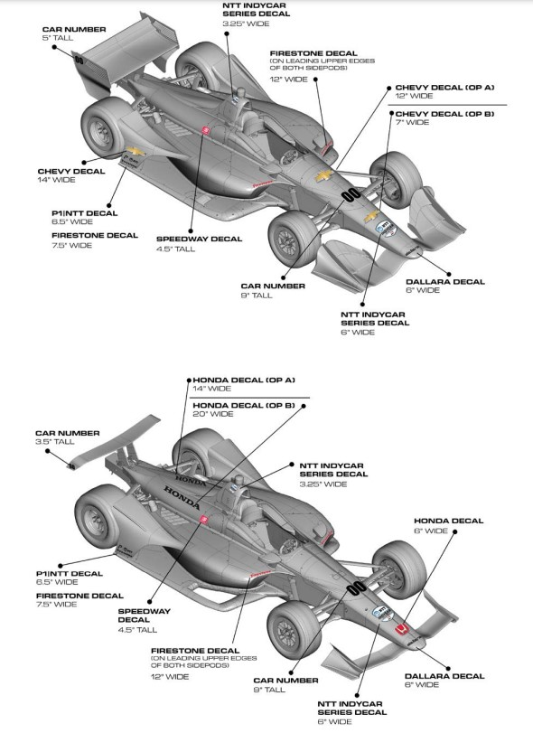
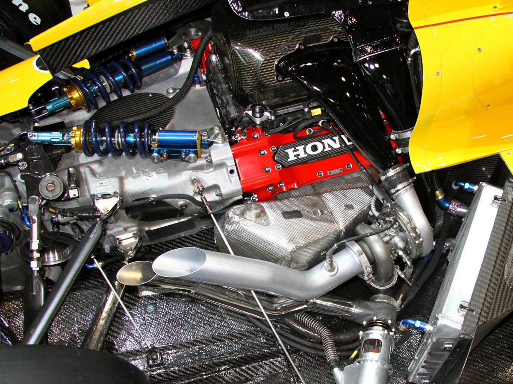
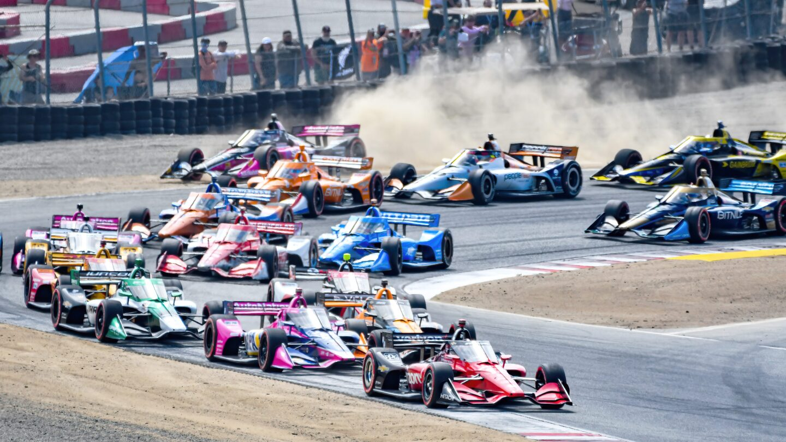
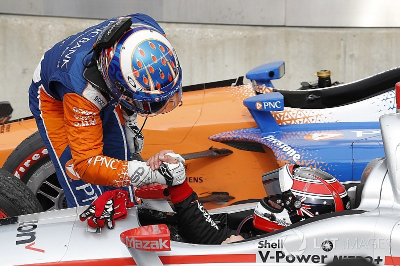

<!DOCTYPE html>
<html lang="en">
<head>
    <meta charset="UTF-8">
    <meta name="viewport" content="width=device-width, initial-scale=1.0">
    <title>Motorsport37 - IndyCar</title>
    <link rel="stylesheet" href="../CSS/reset.css">
    <link rel="stylesheet" href="../CSS/categoria.css">
</head>
</html>
<body>
    <header>
        
            <nav>
                <ul>
                    <li><a href="../index.html">Início</a></li>
                    <li><a href="formula1.html">Formula 1</a></li>
                    <li><a href="motogp.html">MotoGP</a></li>
                    <li><a href="wec.html">WEC</a></li>
                    <li><a href="indy.html">IndyCar</a></li>
                    <li><a href="wrc.html">WRC</a></li>
                    <li><a href="formulad.html">Formula Drift</a></li>
                    <li><a href="nascar.html">Nascar</a></li>
                    <li><a href="game.html">Game</a></li>
                    <li><a href="creditos.html">Créditos</a></li>
                </ul>
            </nav>
    
</header>

<div class="conteudo">
    <header>
        <h1>Indy</h1>
    </header>

    <h2>Como funciona a IndyCar</h2>

    <p>A IndyCar é uma competição norte-americana que abrange uma mistura de circuitos ovais,
       mistos e urbanos. Os carros são monopostos potentes, com motores V6 biturbo. A IndyCar
       atrai pilotos talentosos e equipes como Team Penske e Chip Ganassi Racing. Os pontos
       acumulados ao longo da temporada determinam o campeão, enquanto as 500 Milhas de Indianápolis
       destacam-se como uma das corridas mais prestigiadas.</p>

    

    <h2>Onde a IndyCar corre</h2>

    <p>A IndyCar Series realiza corridas em uma variedade de circuitos, incluindo ovais, circuitos de rua e mistos.
       As corridas ocorrem principalmente nos Estados Unidos, em locais emblemáticos como o Indianápolis Motor Speedway
       e circuitos urbanos como St. Petersburg e Detroit. Essa diversidade de pistas proporciona desafios únicos aos pilotos e equipes ao longo da temporada.</p>

    

    <h2>Quando a IndyCar Começou</h2>

    <p>A IndyCar Series teve sua temporada inaugural em 1996. No entanto, é importante observar que a história da categoria remonta a corridas de monopostos nos Estados Unidos,
       incluindo a famosa corrida Indianapolis 500, que existe desde 1911. A IndyCar Series foi formada como uma unificação de várias séries de corridas de monopostos, visando
       consolidar e fortalecer o esporte a motor de monopostos nos Estados Unidos. Desde então, a categoria evoluiu e continua sendo uma das principais competições de corridas
       de monopostos na América do Norte.</p>

         <video controls width="600" height="400">
            <source src="../VID/firstindy.mp4" type="video/mp4">
        </video>

    <h2>Como Funcionam os Carros da IndyCar</h2>

    <p>Os carros da IndyCar são máquinas de alta performance com chassi comum da Dallara. Equipados com motores V6 biturbo de fabricantes como Honda e Chevrolet,
       possuem aerodinâmica ajustável, pneus da Firestone e tecnologia avançada em transmissão, freios, suspensão, telemetria e eletrônicos. A eficiência no
       consumo de combustível é crucial, e medidas de segurança, como células de sobrevivência e o "Aeroscreen", são priorizadas. Esses elementos combinados
       proporcionam corridas emocionantes em diferentes tipos de pistas.</p>

    
    
    <h2>Qual o motor da IndyCar</h2>

    <p>Atualmente, os motores da IndyCar são fornecidos por duas fabricantes: Honda e Chevrolet. Ambas as fabricantes produzem motores V6 biturbo.
       Esses motores têm especificações técnicas detalhadas, incluindo capacidade cúbica, configuração de turbocompressor, e são projetados para
       proporcionar um equilíbrio entre potência, confiabilidade e eficiência. O uso de motores de diferentes fabricantes adiciona uma dinâmica
       interessante à competição, já que as equipes podem escolher entre Honda e Chevrolet, cada uma com suas características distintas.</p>

    

    <h2>Quantos Pilotos e Equipes Competem na IndyCar</h2>

    <p>O número de pilotos e equipes na IndyCar pode variar de temporada para temporada, mas geralmente há uma média de 20 a 24 pilotos e
       cerca de 10 a 12 equipes participando em uma temporada típica. Cada equipe pode ter um ou mais carros, e a competitividade é alimentada
       por uma mistura de equipes estabelecidas e novos participantes. Essa dinâmica proporciona corridas emocionantes, com diferentes talentos
       competindo em diversos circuitos ao longo da temporada.</p>

    

    <h2>Quem São os Pilotos Mais Bem-Sucedidos da IndyCar</h2>

    <p>Os pilotos mais bem-sucedidos da IndyCar incluem lendas como Scott Dixon, A.J. Foyt, Mario Andretti, Al Unser, Al Unser Jr. e Helio Castroneves.
       Esses pilotos conquistaram múltiplos campeonatos e vitórias nas corridas mais emblemáticas, contribuindo para a rica história da categoria.</p>

    

    <footer>
        <p>&copy; 2023 MilenaNovka. Todos os direitos reservados.</p>
    </footer>

</body>